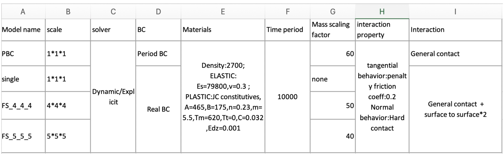
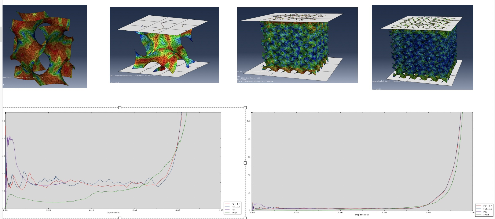
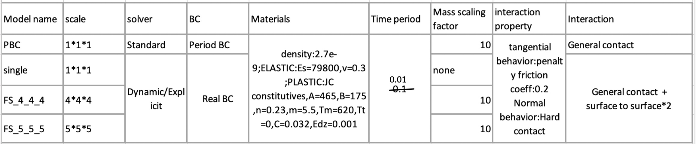

TPMS simulation using Dynamic/Explicit
investigate its size effect with respect to shell model
1.Initial simulation settings

its results down here

still got some questions: why they got zero Poisson’s Ratio instead of Postive Poisson’s Ratio
Despite its wrong density and step period ,the results can be partly resonable according to its consistent settings (regardless of ALLKE/ALLIE>5%).
1.Rectified simulation settings

As for its tiny time period, it’s according to
1.Why don’t we do that:
If consistnet with experimental time period, its total time increments will a be mega number, for its critical time increment is tiny near micron-scale, it cost a lot even the collapse of the sys.
the critical time increment is defined by
delta_t<=L/C
L is the minimum feature length of the grid, C is the wave velocity (usually the speed of sound or stress wave propagation of a material).
2.Why we do that:
The static/standard can’t deal with such complex models, and if ALLKE/ALLIE<5%, it can be regarded as Quasi-static process.
静力学、显式隐式动力学的核心区别
- 是否包含惯性项
- 静力学：不考虑惯性（\mathbf{M}\ddot{\mathbf{u}}=0)，只需静平衡
- 动力学：保留惯性项，需要时间积分（\mathbf{M}\ddot{\mathbf{u}}\neq 0)。
- 求解策略
- 基于数值时间积分:隐式动力学：依赖迭代求解，通常稳定性更好，可使用大时间步；显式动力学：无需迭代求解全局方程，但时间步长小，对波传播、严重失效等问题更高效。
- 基于上一步来求解下一步:静力学：不关心随时间演变的动态过程，每个时间增量达到系统平衡
- 适用场景
- 静力学：载荷缓慢施加、惯性可忽略的场合；
- 隐式动力学：中低速动态或准静态过程；
- 显式动力学：高速冲击、碰撞、爆炸、金属成形等瞬态剧烈动态过程。